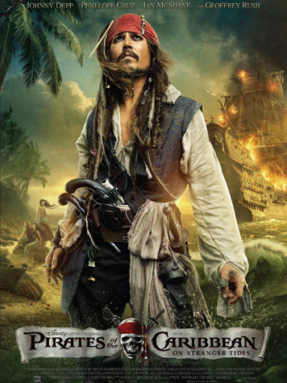
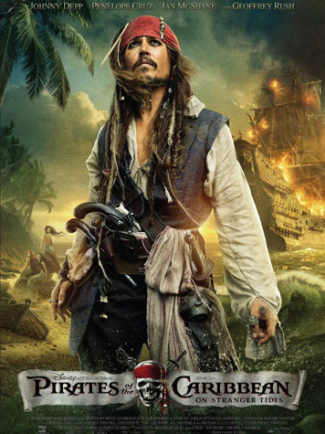
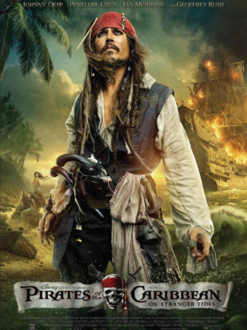

As I stated previously, the color palette selected for a film poster plays a big role in the message
it communicates as well as the effect it has on an audience. Today we will be discussing a common color
combinations and reoccurrences found in movie posters.
Blue and Orange: The combination of the colors blue and orange has recently grown extremely popular in
film advertisings. It can be found in the posters for the films: Blade Runner, The Dark Knight, Avatar,
Zero Dark Thirty, Dunkirk, Back to the Future…as well as many more.
The Wrap states that “blue and orange are a powerful combination because unlike other color
pairings — red and green, pink and blue — they don’t conjure cultural associations that are already set
in stone. They sit on opposite sides of the color wheel, evoking the two poles of hot and cold and explosive
action.”
A Touch of Red: Another common color occurrence in film poster design is a red highlight color. This can be found in the posters of Die Hard, Pirates of the Caribbean… Colour Lovers explains that touches of the color red are found to be extremely attractive to the human eye, are perceived as more successful, are rapidly eye catching from afar…

Other color combinations may be found in film posters but the ones stated above are the most popular of all.